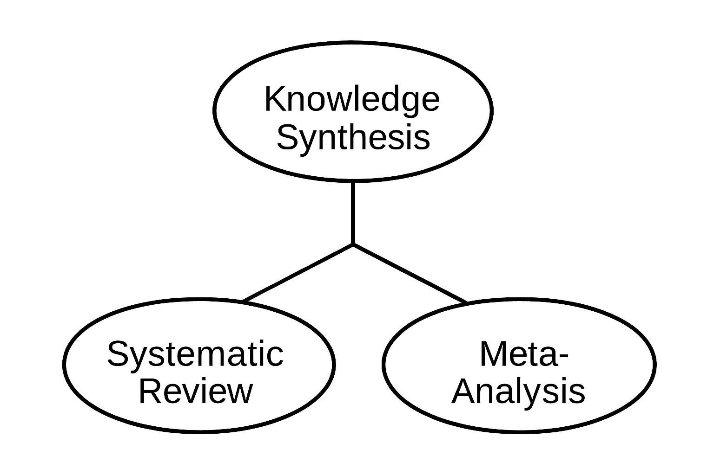
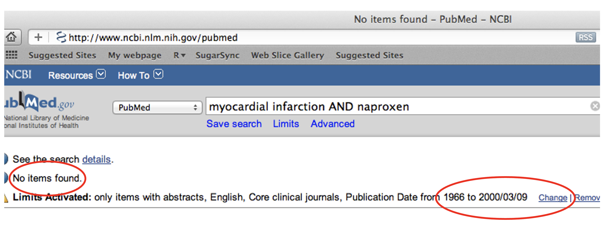
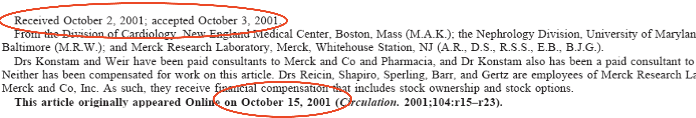
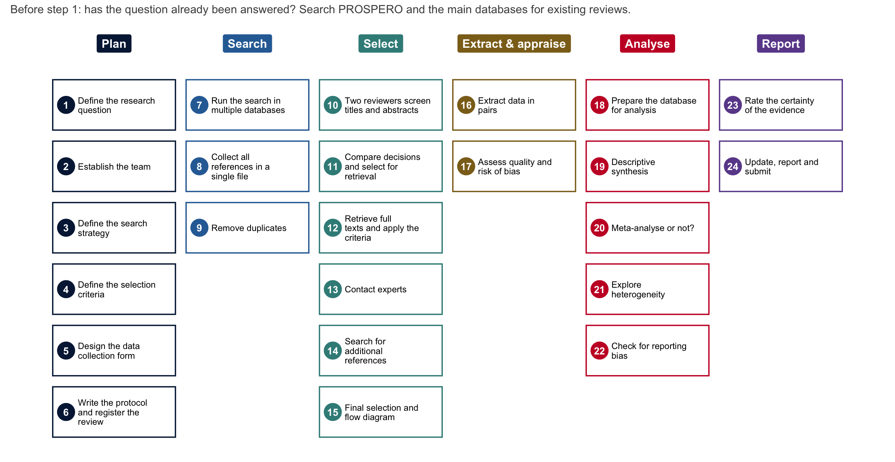
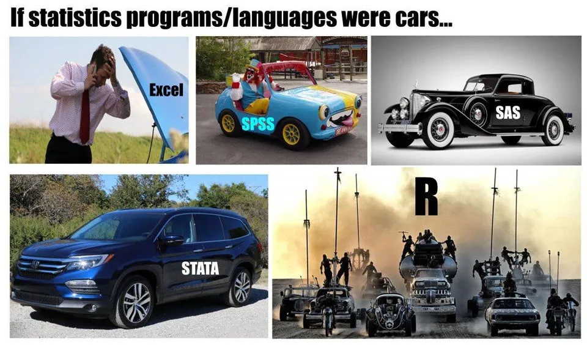

explain why a single study is rarely enough to guide practice, and what systematic reviews and meta-analyses add;
distinguish a systematic review from a narrative review, and describe the main steps in conducting one;
translate a PICO question into a precise estimand;
describe the main threats to a review’s validity: heterogeneity, bias in the primary studies, and bias in the review process;
explain why this book takes a quantitative, Bayesian-friendly and code-based approach.
1.1 One study is a start, not the answer
Knowledge synthesis has two components (Figure 1.1). A systematic review finds, selects and appraises all the studies that address a question, using methods set out in advance. A meta-analysis combines their results statistically. A systematic review need not include a meta-analysis (sometimes the studies are too different to combine), and a meta-analysis without a systematic review behind it is just an average of whatever studies the authors happened to choose.

Figure 1.1: The two components of knowledge synthesis.
Why do we need synthesis at all? Because single studies are often too small to answer the questions that matter, especially questions about harms; because results conflict; because the evidence base keeps growing; and because the details of how individual studies were done, and reported, can change their meaning entirely. The story of rofecoxib illustrates all of these points.
1.1.1 A case study: rofecoxib (Vioxx)
Rofecoxib, a selective COX-2 inhibitor, was marketed as an anti-inflammatory drug with fewer gastrointestinal side effects than older non-steroidal anti-inflammatory drugs (NSAIDs). The VIGOR trial, published in 2000, confirmed the gastrointestinal advantage over naproxen but also found four to five times as many myocardial infarctions with rofecoxib (0.4% vs 0.1%) (1).
How should that signal be interpreted? In 2001 the manufacturer’s scientists published a pooled analysis of 23 phase IIb to V trials, more than 28 000 patients and 14 000 patient-years (2). Its headline results(Figure 1.3) were (incorrectly!) interpreted as being very reassuring (Figure 1.2): compared with placebo and non-naproxen NSAIDs, the risk of rofecoxib was interpreted as being not increased (0.84 (95% CI 0.51 to 1.38), 0.79 (0.40 to 1.55), respectively. Only against naproxen was rofecoxib statistically worse, 1.69 (1.07 to 2.69), and the authors concluded that this difference was “likely the result of the antiplatelet effects” of naproxen.
Figure 1.3: Main results of the 2001 pooled analysis of rofecoxib trials: relative risk of the combined end point of cardiovascular, haemorrhagic and unknown deaths, non-fatal myocardial infarction and non-fatal stroke. Squares are sized by patient-years. Data from (2).
Three features of this analysis deserve a closer look, and none is visible from the headline.
The intervals are wide. “No evidence for an excess” against placebo rests on a 95% CI running from a 49% reduction to a 38% increase in risk. This introduces a recurrent misinterpretation of data: confusing absence of evidence with evidence of absence (3) (Section 1.4).
The explanation was untested. The naproxen hypothesis may seem plausible, but was there evidence that naproxen prevents myocardial infarction? A PubMed search for “myocardial infarction AND naproxen”, restricted to publications before VIGOR, retrieves nothing (Figure 1.4). The cardioprotective effect of naproxen was a hypothesis invoked to explain away an inconvenient result.

Figure 1.4: A PubMed search for evidence that naproxen prevents myocardial infarction, limited to publications before March 2000, returns no items.
The small print matters. The paper was received on 2 October 2001 and accepted the following day; most of its authors were employees or paid consultants of the manufacturer (Figure 1.5). Neither fact makes the analysis wrong. Both are reasons to read it with particular care.

Figure 1.5: Dates and disclosures from the pooled analysis (2).
An independent meta-analysis published in JAMA in August 2001 had already raised “a cautionary flag” about cardiovascular risk with COX-2 inhibitors (4) ands it would seem that the sponsor needed to quickly assuage any concerns and this was abetted by academics, peer reviewers and journal editors.
Rofecoxib was eventually withdrawn for saferty concerns in September 2004, after a placebo-controlled trial of colorectal adenoma prevention again showed an excess of cardiovascular events. Two cumulative meta-analyses later showed that the harm could have been detected years earlier (5,6). Ross and colleagues, using trial data released through litigation, pooled 30 placebo-controlled trials with more than 17 000 patients (Table 1.1, Figure 1.6). Ordered by date, the cumulative relative risk was above 1 from the earliest trials, and its confidence interval excluded 1 from early 2002, more than two years before the withdrawal.
Show the data
rofecoxib_trials <-tribble(~source, ~trial, ~indication, ~dose_mg, ~weeks, ~lpo,"Ehrich et al, 1999", "010", "Osteoarthritis", "25 and 125", 6, "1996-02-08","Ehrich et al, 2001", "029", "Osteoarthritis", "12.5, 25 and 50", 6, "1997-02-05","Saag et al, 2000", "033", "Osteoarthritis", "12.5 and 25", 6, "1997-11-18","Day et al, 2000", "040", "Osteoarthritis", "12.5 and 25", 6, "1998-01-01","Laine et al, 1999", "044", "Osteoarthritis", "25 and 50", 24, "1998-02-18","Hawkey et al, 2000", "045", "Osteoarthritis", "25 and 50", 24, "1998-02-18","Truitt et al, 2001", "058", "Osteoarthritis", "12.5 and 25", 6, "1998-04-01","Unpublished", "083", "Osteoarthritis", "25", 64, "2000-02-09","Kivitz et al, 2004", "085", "Osteoarthritis", "12.5", 6, "1999-03-03","Weaver et al, 2006", "090", "Osteoarthritis", "12.5", 6, "1999-05-17","Smugar et al, 2006", "112", "Osteoarthritis", "12.5 and 25", 6, "2000-09-08","Smugar et al, 2006", "116", "Osteoarthritis", "25", 6, "2000-06-22","Laine et al, 2004", "136", "Osteoarthritis", "25", 12, "2002-02-05","Birbara et al, 2006", "219", "Osteoarthritis", "12.5", 6, "2003-11-28","Birbara et al, 2006", "220", "Osteoarthritis", "12.5", 6, "2003-11-24","Unpublished", "017", "Rheumatoid arthritis", "125 and 175", 6, "1997-05-21","Schnitzer et al, 1999", "068", "Rheumatoid arthritis", "25 and 50", 8, "1998-09-10","Truitt et al, 2001 (abstract only)", "096", "Rheumatoid arthritis", "12.5 and 25", 12, "2000-07-21","Geusens et al, 2002", "097", "Rheumatoid arthritis", "25 and 50", 12, "2000-06-06","Hawkey et al, 2003", "098 and 103","Rheumatoid arthritis", "50", 12, "2000-07-06","Thal et al, 2005", "078", "Alzheimer disease", "25", 208, "2003-04-23","Reines et al, 2004", "091", "Alzheimer disease", "25", 52, "2000-11-30","Unpublished", "126", "Alzheimer disease", "25", 52, "2001-05-30","Nickel et al, 2003", "118", "Chronic nonbacterial prostatitis","25 and 50", 6, "2000-07-26","Katz et al, 2003", "120 and 121","Low back pain", "25 and 50", 4, "2000-06-27","Bresalier et al, 2005; Baron et al, 2008", "122", "Colorectal adenomas", "25", 156, "2004-09-30","Unpublished", "125", "Migraine prophylaxis", "25", 12, "2001-06-29","Unpublished", "129", "Familial adenomatous polyposis", "25", 24, "2002-05-14") |>mutate(lpo =as.Date(lpo))rofecoxib_trials |>arrange(lpo) |>mutate(lpo =format(lpo, "%d %b %Y")) |>kable(col.names =c("Source", "Trial no.", "Indication", "Rofecoxib dose (mg)","Planned duration (wk)", "LPO"))
Table 1.1: Placebo-controlled rofecoxib trials of 4 weeks or longer conducted by the manufacturer, as listed by (6) (Table 1). Trials 098/103 and 120/121 were reported together, so the 28 rows cover 30 trials. LPO: last patient out.
Source
Trial no.
Indication
Rofecoxib dose (mg)
Planned duration (wk)
LPO
Ehrich et al, 1999
010
Osteoarthritis
25 and 125
6
08 Feb 1996
Ehrich et al, 2001
029
Osteoarthritis
12.5, 25 and 50
6
05 Feb 1997
Unpublished
017
Rheumatoid arthritis
125 and 175
6
21 May 1997
Saag et al, 2000
033
Osteoarthritis
12.5 and 25
6
18 Nov 1997
Day et al, 2000
040
Osteoarthritis
12.5 and 25
6
01 Jan 1998
Laine et al, 1999
044
Osteoarthritis
25 and 50
24
18 Feb 1998
Hawkey et al, 2000
045
Osteoarthritis
25 and 50
24
18 Feb 1998
Truitt et al, 2001
058
Osteoarthritis
12.5 and 25
6
01 Apr 1998
Schnitzer et al, 1999
068
Rheumatoid arthritis
25 and 50
8
10 Sep 1998
Kivitz et al, 2004
085
Osteoarthritis
12.5
6
03 Mar 1999
Weaver et al, 2006
090
Osteoarthritis
12.5
6
17 May 1999
Unpublished
083
Osteoarthritis
25
64
09 Feb 2000
Geusens et al, 2002
097
Rheumatoid arthritis
25 and 50
12
06 Jun 2000
Smugar et al, 2006
116
Osteoarthritis
25
6
22 Jun 2000
Katz et al, 2003
120 and 121
Low back pain
25 and 50
4
27 Jun 2000
Hawkey et al, 2003
098 and 103
Rheumatoid arthritis
50
12
06 Jul 2000
Truitt et al, 2001 (abstract only)
096
Rheumatoid arthritis
12.5 and 25
12
21 Jul 2000
Nickel et al, 2003
118
Chronic nonbacterial prostatitis
25 and 50
6
26 Jul 2000
Smugar et al, 2006
112
Osteoarthritis
12.5 and 25
6
08 Sep 2000
Reines et al, 2004
091
Alzheimer disease
25
52
30 Nov 2000
Unpublished
126
Alzheimer disease
25
52
30 May 2001
Unpublished
125
Migraine prophylaxis
25
12
29 Jun 2001
Laine et al, 2004
136
Osteoarthritis
25
12
05 Feb 2002
Unpublished
129
Familial adenomatous polyposis
25
24
14 May 2002
Thal et al, 2005
078
Alzheimer disease
25
208
23 Apr 2003
Birbara et al, 2006
220
Osteoarthritis
12.5
6
24 Nov 2003
Birbara et al, 2006
219
Osteoarthritis
12.5
6
28 Nov 2003
Bresalier et al, 2005; Baron et al, 2008
122
Colorectal adenomas
25
156
30 Sep 2004
All 28 rows had placebo as the control. 5 of them were never published, and one appeared only as an abstract. Ordered by completion date, 22 had finished before the 2001 pooled analysis was submitted.
Figure 1.6 redraws Ross and colleagues’ cumulative analysis from the numbers in their Table 3. At each date, the estimate pools every trial whose data would have been available by then (three months after its last patient finished); trial 078 enters three times because interim data were sent to the FDA while it was still running. Ross and colleagues fitted Cox models to the individual patients’ data. As a check, the open circles recompute each step from the published event counts and person-years alone, with a Mantel–Haenszel rate ratio. They agree closely in the early years but run somewhat lower once the large trials enter, a reminder that summary data only approximate an analysis of individual participants (Chapter 16).
Figure 1.6: Cumulative pooled analysis of cardiovascular thrombotic events or death in the 30 placebo-controlled trials of rofecoxib, by the date each trial’s data became available. Filled points and lines: rate ratio and 95% CI published by (6) (red: lower limit above 1; arrows: upper limit beyond 10). Open circles: our reconstruction from the summary data.
The estimated rate ratio was above 1 at every step from 1998 onwards. By the time the first safety update was submitted to the FDA in June 2001, the lower confidence limit had reached 1.00, and from 2002 it stayed above 1, two years before the drug was withdrawn.
Lessons from rofecoxib
A single trial, even a large one, cannot settle questions about uncommon harms.
A meta-analysis is only as good as the studies it includes. Several of the trials in Table 1.1 were never published; a review needs all the data.
Read beyond the abstract: confidence intervals, the evidence for proposed explanations, and the conflicts of interest of authors and, sometimes, editors.
Cumulative meta-analysis, adding studies in the order they appeared, shows when the evidence became convincing.
1.1.2 Small errors, large consequences
Details matter outside medicine too. A widely cited 2010 analysis by two Harvard economists reported that countries whose public debt exceeded 90% of gross domestic product grew markedly more slowly (7). It was used to justify austerity policies in several countries. In 2013 a graduate student, Thomas Herndon, tried to reproduce the result from the authors’ spreadsheet and found selective exclusion of data, an unconventional weighting scheme, and a spreadsheet formula that omitted several countries (8). Corrected, the dramatic drop in growth at 90% largely disappeared.
Figure 1.7: The spreadsheet error identified in the reanalysis of the debt and growth data.
Errors of this kind are hard to see in a spreadsheet and easy to see in a script. This is one reason every analysis in this book is written as code (Section 1.6).
1.1.3 The reproducibility problem
Single studies, even good ones, often fail to replicate:
Scientists at the biotechnology company Amgen could confirm the findings of only 6 of 53 “landmark” preclinical cancer studies (9).
The Reproducibility Project: Cancer Biology repeated 50 experiments from 23 high-impact papers; the replication effect sizes were, on average, 85% smaller than the originals (10).
In psychology, only 36% of 100 replications of published studies reached statistical significance, against 97% of the originals (11).
For synthesis this has three consequences. A single positive trial is better regarded as hypothesis-generating than as practice-changing. Pooling studies increases precision and stability, provided the studies are sound. And explicit methods make the differences between studies visible, so they can be investigated rather than averaged away.
1.1.4 The evidence pyramid and its limits
The familiar evidence pyramid places case reports at the bottom, observational studies above them, randomised trials higher still, and systematic reviews at the top. It is a useful reminder that study design constrains how far a result can be trusted. But it is a heuristic, not a law:
a systematic review of biased trials is not high-quality evidence;
a large, carefully analysed cohort study may be more informative than a small, poorly blinded trial;
design is necessary but not sufficient for quality. The rofecoxib pooled analysis sat at the top of the pyramid.
Key point
Quality comes from design, execution and transparency, not from design alone.
1.2 What is a systematic review?
A systematic review is a structured, transparent and reproducible process for finding and synthesising the evidence on a question. Its core features are:
clearly stated objectives;
eligibility criteria defined in advance;
a systematic, reproducible search;
an assessment of the risk of bias of each included study;
a quantitative synthesis (meta-analysis) where appropriate;
transparent reporting, following PRISMA 2020 (12).
It is not a narrative review in which the authors summarise the papers they found interesting, nor a review without a protocol, nor a collection of only the positive or confirmatory studies, and it is not a substitute for clinical judgement. Table 1.2 summarises the differences.
Table 1.2: Narrative and systematic reviews compared.
Feature
Narrative review
Systematic review
Question
Often broad
Focused (PICO, estimand)
Search
Unsystematic
Explicit and reproducible
Selection of studies
At the authors’ discretion
Pre-specified criteria
Appraisal of studies
Rarely formal
Standard risk-of-bias tools
Synthesis
Qualitative
Quantitative where appropriate
Reporting guideline
None
PRISMA 2020
Reproducibility
Low
High
The label “systematic review” is increasingly attached to work that does not deserve it. Learning to tell the difference is one of the main aims of this book.
1.2.1 The steps of a systematic review
(13) describe 24 steps, which we group into six phases (Figure 1.8). Before step 1, check that the question has not already been answered by searching PROSPERO and the main databases for existing reviews.
Show the code
steps <- tibble::tibble(step =1:24,text =c("Define the research question", "Establish the team","Define the search strategy", "Define the selection criteria","Design the data collection form", "Write the protocol and register the review","Run the search in multiple databases", "Collect all references in a single file","Remove duplicates", "Two reviewers screen titles and abstracts","Compare decisions and select for retrieval", "Retrieve full texts and apply the criteria","Contact experts", "Search for additional references","Final selection and flow diagram", "Extract data in pairs","Assess quality and risk of bias", "Prepare the database for analysis","Descriptive synthesis", "Meta-analyse or not?","Explore heterogeneity", "Check for reporting bias","Rate the certainty of the evidence", "Update, report and submit"),phase =rep(c("Plan", "Search", "Select", "Extract & appraise", "Analyse", "Report"),times =c(6, 3, 6, 2, 5, 2))) |>mutate(phase =factor(phase, levels =unique(phase)),col =as.integer(phase)) |>group_by(phase) |>mutate(row =row_number()) |>ungroup()phase_cols <-c("#041E42", "#2E6DA4", "#3B8C88", "#8C6D1F", "#C8102E", "#6B4C9A")ggplot(steps) +# phase headersgeom_label(data =distinct(steps, phase, col),aes(x = col, y =0, label = phase, fill = phase),colour ="white", fontface ="bold", size =4, label.size =0,label.padding =unit(0.35, "lines")) +# step boxesgeom_tile(aes(x = col, y = row, colour = phase), fill ="white",width =0.92, height =0.82, linewidth =0.6) +geom_point(aes(x = col -0.36, y = row, colour = phase), size =7.5) +geom_text(aes(x = col -0.36, y = row, label = step), colour ="white",fontface ="bold", size =3.4) +geom_text(aes(x = col -0.27, y = row, label = stringr::str_wrap(text, 20)),hjust =0, size =3, lineheight =0.9) +scale_y_reverse() +scale_fill_manual(values = phase_cols, guide ="none") +scale_colour_manual(values = phase_cols, guide ="none") +coord_cartesian(xlim =c(0.52, 6.48), clip ="off") +labs(subtitle ="Before step 1: has the question already been answered? Search PROSPERO and the main databases for existing reviews.") +theme_void() +theme(plot.subtitle =element_text(size =11, colour ="grey30", margin =margin(b =8)),plot.margin =margin(5, 10, 5, 10), plot.title.position ="plot")

Figure 1.8: The 24 steps of a systematic review and meta-analysis, grouped into six phases. Adapted from the 24-step guide of (13).
Plan (steps 1–6). Define the question; assemble a team with content, methodological and statistical expertise; define the search strategy, the selection criteria and the data collection form; then write the protocol and register it prospectively, for example in PROSPERO.
Search (steps 7–9). Run the search in several databases, collect all the records in one file, and remove duplicates (Chapter 2).
Select (steps 10–15). Two reviewers screen titles and abstracts independently and compare their decisions; full texts are retrieved and the criteria applied; experts are contacted and reference lists searched for further studies; and the final list is recorded in a flow diagram.
Extract and appraise (steps 16–17). Extract data in pairs on the piloted form, and assess each study’s risk of bias.
Analyse (steps 18–22). Prepare the data, describe the studies, decide whether a meta-analysis is appropriate, explore heterogeneity, and look for reporting bias.
Report (steps 23–24). Rate the certainty of the evidence, update the search if needed, and write the review following PRISMA 2020.
1.3 From question to estimand
A systematic review starts with a question, usually framed with PICO: the population, intervention (or exposure), comparator and outcome. PICO is a good way to ask a question but often leaves room for different answers. Two analysts given the same PICO may compute different quantities.
The estimands framework, introduced for clinical trials by the ICH E9(R1) addendum, closes that gap (14). Three terms are worth keeping distinct:
the estimand is the precise quantity the study aims to estimate;
the estimator is the statistical method used to estimate it;
the estimate is the number the estimator produces.
Figure 1.9 shows how they fit together: the estimand, together with a generative model of how the data arise (for example a causal diagram, or DAG, and the functional relationships between its variables), determines the statistical model, which is applied to the data to produce the estimate.
Operational cohort: when, where and how identified; inclusion and exclusion
Intervention and comparator
Names the arms
The contrast, and how intercurrent events are handled
Outcome
Names the end point
Definition and timing of the end point
Measure
Often omitted
Specified: risk difference, risk ratio, odds ratio, hazard ratio
Multiplicity
Not addressed
Primary and secondary estimands declared
Reproducibility
Moderate
High: two analysts compute the same quantity
A convenient way to move from PICO to an estimand is to add T-I-M-E:
T, time window. When is the outcome assessed? Thirty-day and five-year mortality are different estimands for the same intervention.
I, intercurrent events. How are events after randomisation or exposure handled, such as stopping treatment, rescue medication, or death before the outcome of interest?
M, measure. Which effect measure summarises the contrast? Risk differences, risk ratios, odds ratios and hazard ratios are not interchangeable, and the choice has consequences for interpretation and policy (Chapter 8).
E, eligible population. The operational definition of who is included: data source, sampling frame, calendar time, exclusions. It determines to whom the results apply.
Key point
PICO makes a question askable; an estimand makes it answerable.
1.4 Why this book is quantitative
Modern knowledge synthesis is not organised reading. It is statistical inference under uncertainty. Over the course of the book you will fit fixed-effect and random-effects models, quantify heterogeneity, draw forest and funnel plots, carry out sensitivity and influence analyses, test and adjust for publication bias, and work with network and individual participant data meta-analyses.
1.4.1 Frequentist and Bayesian inference
Most published meta-analyses are frequentist. This book also uses Bayesian methods, because they answer the questions decision-makers actually ask.
Before reading on, consider a small thought experiment.
Are you a frequentist or a Bayesian?
Jim claims he can predict coin flips. You flip a fair coin 10 times and he predicts all 10 correctly.
Rebecca claims she can tell natural from artificial sweeteners. You give her 10 samples and she identifies all 10 correctly.
Which statement do you agree with more? (A) Jim’s claim is just as strong as Rebecca’s. (B) Rebecca’s claim is stronger than Jim’s.
The data are identical: 10 successes in 10 trials, P = 0.001 in each case. If you chose B, you used what you already knew about the plausibility of each claim. That is Bayesian reasoning.
Table 1.4 summarises the two approaches; Chapters 12 and 13 develop them in detail.
Table 1.4: Frequentist and Bayesian inference compared.
Frequentist
Bayesian
Parameters
Fixed, unknown constants
Uncertain quantities with probability distributions
Inference
P values and confidence intervals
Prior + data (likelihood) → posterior distribution
Meaning of a 95% interval
The procedure captures the true value in 95% of repeated studies; it is not a probability statement about this interval
Given the data and the prior, the true value lies in this interval with probability 0.95
P value
The probability of data at least this extreme if the null hypothesis were true
Not used; probabilities are stated directly, e.g. P(risk reduction > 10%)
Heterogeneity
Usually a point estimate of τ²
A distribution, with its uncertainty carried into all results
Previous evidence
Not formally used
Incorporated explicitly, and open to debate, through the prior
A classical meta-analysis asks: what is the best estimate of the pooled effect, and how precise is it? A Bayesian meta-analysis asks: given what was known before these studies and what they show, what should we now believe about the true effect, and with what probability? The answer is a full probability distribution, from which statements such as “the probability that the treatment reduces mortality by more than 10% is 0.82” follow directly. Bayesian methods also shrink unstable estimates from small studies, propagate the uncertainty in heterogeneity, and fit naturally into decision analysis.
1.4.2 Heterogeneity: the central challenge
Heterogeneity, variation in the true effects across studies, is a theme throughout the book. It comes in three related but distinct forms:
clinical: differences in populations, interventions, comparators, outcomes and timing;
methodological: differences in design and risk of bias;
statistical: more variation in results than chance alone would produce, measured by Cochran’s Q, I² and τ².
A pooled estimate is meaningful only if the true effects are similar enough to be summarised by one number. A high I² does not automatically forbid pooling, and a low one does not license it. Random-effects models acknowledge heterogeneity but do not explain it; subgroup analyses and meta-regression can help explain it, but only if they are not used to hunt for significant results.
Key point
Investigating the sources of heterogeneity is science, not just statistics.
1.4.3 Bias: a thread through every chapter
Bias can enter at two levels. Within the primary studies there may be selection, performance, detection, attrition and reporting biases, assessed with RoB 2 for randomised trials and ROBINS-I for non-randomised studies (Chapter 5); in observational studies, confounding is often the dominant concern (Chapter 19). In the review process there may be publication, language, outcome-reporting, time-lag, availability and citation biases (Chapters 2 and 15).
1.5 Common pitfalls
Many published systematic reviews share the same weaknesses.
Design pitfalls
No protocol, or one written after the analysis.
A question so broad that the pooled estimate means nothing.
An inadequate search (too few databases, no trial registers or grey literature).
A single reviewer screening and extracting data.
No prospective registration, which leaves room for researcher degrees of freedom: choosing analyses, outcomes or subgroups after seeing the data (15), P-hacking, and HARKing (hypothesising after the results are known).
Analysis pitfalls
Pooling despite major clinical heterogeneity.
Ignoring unpublished and negative studies.
Switching outcomes after the protocol.
Flawed statistical reasoning, for example treating “not significant” as “no effect”.
Relying on I² as the only measure of heterogeneity.
Treating compliance with GRADE or PRISMA as a substitute for scientific judgement.
Reporting guidelines and risk-of-bias tools are necessary but not sufficient. A beautifully PRISMA-compliant review of biased trials is still a biased review.
1.5.1 Tools for evaluating a systematic review
The EQUATOR Network collects reporting guidelines, including:
PRISMA 2020 for systematic reviews and meta-analyses (12);
Risk-of-bias tools include RoB 2 for randomised trials and ROBINS-I for non-randomised studies of interventions.
Checklists are a starting point
Over-reliance on checklists risks confusing complete reporting with methodological rigour. A checklist cannot tell you whether a particular study’s design, execution or context makes its result untrustworthy.
1.5.2 Why it matters
Systematic reviews are the basis of clinical practice guidelines (NICE, WHO, ACC/AHA), health technology assessments, coverage and policy decisions, economic evaluations, and the design of new trials. The Cochrane Library alone contains more than 8000 reviews. When a review is wrong, through bias, selective inclusion or poor methods, the harm scales with its influence.
What distinguishes an excellent review? Technical quality (a registered protocol, a comprehensive search, independent duplicate screening, rigorous risk-of-bias assessment, an appropriate model, sensitivity analyses, complete reporting) is essential. But it must be combined with scientific judgement: an estimand specified before data extraction, clinical heterogeneity taken seriously, publication bias actively investigated, conclusions calibrated to the certainty of the evidence, and limitations stated honestly.
Key point
Technical quality without scientific judgement produces precise nonsense.
1.6 Why R?
Every analysis in this book is scripted. Code makes analyses reproducible, because anyone can rerun them; makes assumptions explicit, because the model is written down; makes uncertainty visible, through intervals and posterior distributions; and makes errors detectable, unlike the spreadsheet in Section 1.1.2.

Figure 1.10: If statistics programs were cars.
R is free, open source, and has the most complete set of packages for meta-analysis (see the Preface). Documents written in Quarto combine text, code and results, so that the report and the analysis cannot drift apart. This book is itself written that way.
Key points
One study is a start, not the answer. Synthesis is how science corrects itself, provided it includes all the evidence.
Quality comes from design, execution and transparency, not from design alone.
PICO makes questions askable; estimands make them answerable.
Heterogeneity is the central challenge of meta-analysis.
Checklists are necessary but not sufficient; judgement is irreplaceable.
Bayesian methods give the probability statements decision-makers want.
Code makes science reproducible and errors visible.
Exercises
Find a recently published systematic review in your field. Using Table 1.2, decide whether it is genuinely systematic. Was its protocol registered before the search?
Write the review’s question as a PICO, then as an estimand using T-I-M-E. Which elements did the authors leave unstated?
In the rofecoxib story, list every point at which a reader of the 2001 pooled analysis could have recognised that its reassuring conclusion was fragile.
Install R, RStudio and Quarto, and the packages listed in the Preface. Check that library(rentrez) and library(xml2) load without errors; both are used in Chapter 2.
Further reading
The Cochrane Handbook for Systematic Reviews of Interventions(17), especially Chapter 1.
Reinhart CM, Rogoff KS. Growth in a time of debt [Internet]. National Bureau of Economic Research; 2010. Report No.: 15639. Available from: https://www.nber.org/papers/w15639
Higgins JPT, Thomas J, Chandler J, Cumpston M, Li T, Page MJ, et al., editors. Cochrane handbook for systematic reviews of interventions [Internet]. Version 6.5. Cochrane; 2024. Available from: https://training.cochrane.org/handbook